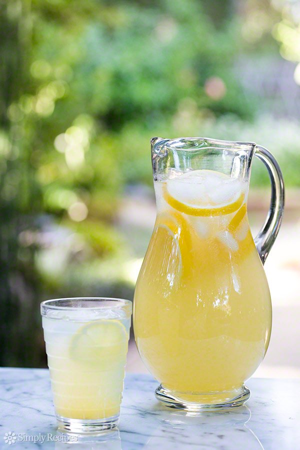

INGREDIENTS
-
- 1 cup white, granulated sugar (can reduce to 3/4 cup)
- 1 cup water (for the simple syrup)
- 1 cup lemon juice
- 2 to 3 cups cold water (to dilute)
METHOD
- Make "simple syrup": Place the sugar and water in a small saucepan and bring to a simmer. Stir so that the sugar dissolves completely and remove from heat.
- 2 Juice the lemons: While the water is heating for the simple syrup, juice your lemons. Depending on the size of the lemons, 4 to 6 of them should be enough for one cup of juice.
- Combine lemon juice, simple syrup, water: Pour the juice and the simple syrup sugar water into a serving pitcher. Add 2 to 3 cups of cold water and taste. Add more water if you would like it to be more diluted (though note that when you add ice, it will melt and naturally dilute the lemonade).
- Chill: Refrigerate 30 to 40 minutes.
Serve with ice, sliced lemons.